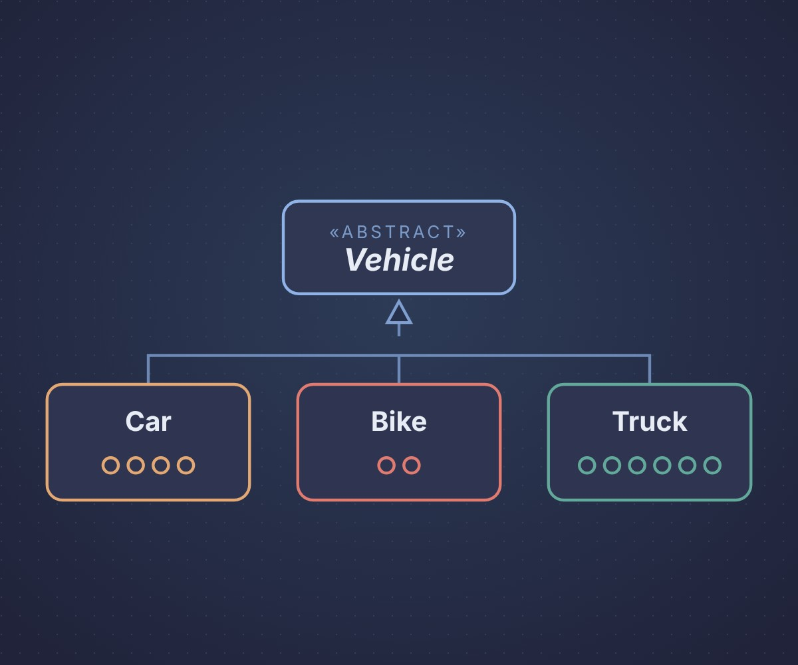

This module builds on the core principles of object-oriented programming to cover the design, development and maintenance of scalable, secure and efficient software. It covers design patterns, software architecture, concurrency, secure coding and clean code, and considers equality, diversity and inclusion, sustainability and entrepreneurship in software design. Weekly practical exercises and case studies from cyber security, data science and AI lead to a capstone project that brings the module’s concepts together in one system.
About this e-portfolio
Each unit page below holds my reflection for that unit, structured using the What? So what? Now what? model, with the artefacts I produced. Code artefacts are Python modules with their tests and a notebook that walks through what they show, all kept in the site’s GitHub repository.

Unit 1: Introduction and Recap of Object-Oriented Programming
This unit revisits inheritance, polymorphism, abstraction and encapsulation, and how classes, objects, constructors, destructors and access control work, and introduces the role of object-oriented programming in large-scale and secure software. It holds my vehicle management class hierarchy in Python, with its tests and a walkthrough notebook.